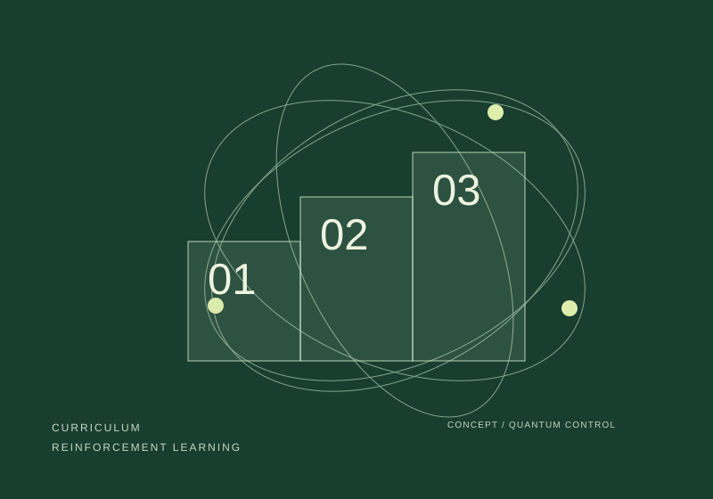
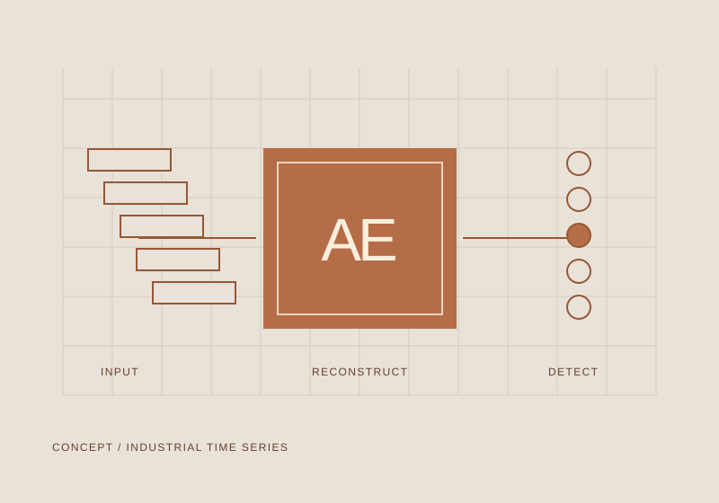
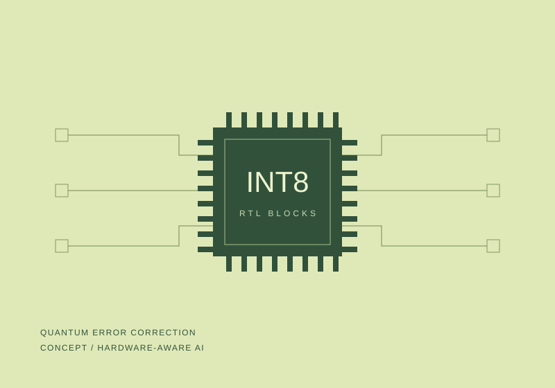
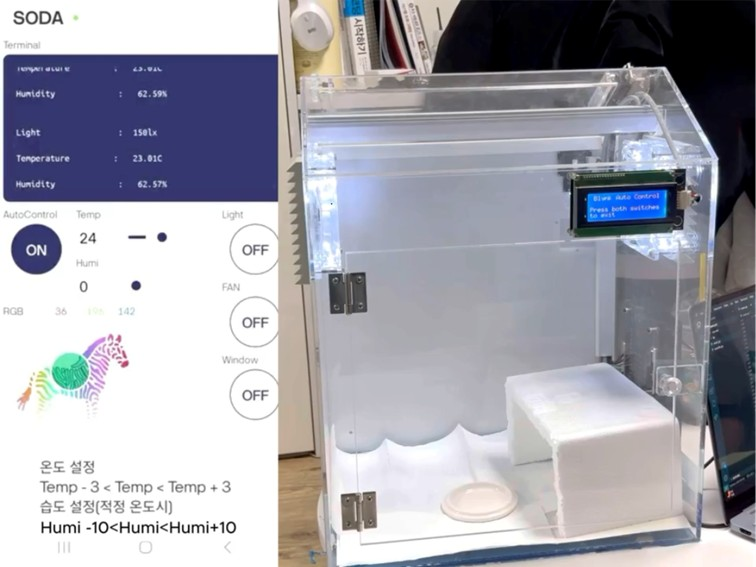

01 / 2025–2026QUANTUM CONTROL
양자 배터리, 학습의 순서를 설계하다.
양자 배터리 충전 제어에 단계적 학습을 적용하고, 물리 모델을 바탕으로 학습 과제를 구성하는 커리큘럼 강화학습으로 연구를 확장했습니다.
Physica Scripta 제1저자 · IJCAI-ECAI GLOW 포스터연구 자세히
박준성 / JUNSEONG PARK
AI RESEARCH & ENGINEERING
PORTFOLIO 202601 / SELECTED RESEARCH
연구의 배경부터 나의 역할과 검증까지.
각 프로젝트에서 이어집니다.

01 / 2025–2026QUANTUM CONTROL
양자 배터리 충전 제어에 단계적 학습을 적용하고, 물리 모델을 바탕으로 학습 과제를 구성하는 커리큘럼 강화학습으로 연구를 확장했습니다.

02 / 2025INDUSTRIAL AI
산업 전력 시계열에 통계·머신러닝·딥러닝 기법을 적용하는 연구에 참여했습니다. 시간 해상도별 성능 분석과 업종별 알고리즘 비교를 통해 데이터 특성에 따른 탐지 방법을 다뤘습니다.

03 / 2026HARDWARE-AWARE AI
경량 MLP 디코더의 양자화·FPGA 매핑 적합성을 분석한 연구를 제1저자로 발표했습니다. QECCT 기반 온디바이스 AI 디코더 프로젝트에서는 핵심 RTL 블록의 기능·합성 검증 결과를 공개했습니다.
제1저자 1편 포함
Student Abstract·포스터 포함
학술대회 발표
등록과 구분
02 / PUBLICATIONS
2026.10.11 / 제1저자 / 게재
Physica Scripta (SCIE)
2026.08 / 제1저자 / 발표
IJCAI-ECAI 2026 Workshop (GLOW), Bremen
2025.06 / 제1저자 / 발표
대한전자공학회 하계종합학술대회
03 / BUILD & EXPLORE
AI·데이터, 웹·시스템, IoT 프로젝트.
Autoencoder / N-BaIoT 데이터셋
연합학습과 Autoencoder를 결합해 IoT 환경에서 분산형 이상 탐지를 수행한 프로젝트
멀티 프로세스 병렬 처리
저수준 I/O와 병렬 처리를 활용한 대용량 CSV 고속 검색 프로젝트
DeepLabV3+
구름 탐지·분류하는 Semantic Segmentation 프로젝트
로그인/회원가입, 자산 관리, 이동 기록, 권한 분리
교육기관 자산관리 웹 시스템 개발
EfficientNet-B3
얼굴 이미지의 live/spoof 분류 모델 구현 및 평가
메뉴 관리, 게시판 기능, 사용자 권한 관리, 보안 등
학과 홈페이지 개편을 위한 요구사항 분석 및 설계 문서 작성 수행
ESP32 · DHT22 · Blynk
SodaIDE 기반의 스마트팜 모델을 응용해 제작한 도마뱀 전용 스마트 케이스

Average Hash Matching / SIFT / ORB
차량 이미지 매칭 및 특징점 검출
담당: 이미지 매칭 · 이미지 특징점 검출
04 / EXPERIENCE
연구, 팀 프로젝트, 교육과 현장 경험
양자 오류 정정을 위한 온디바이스 AI 가속기 SoC 설계
양자 배터리 그래프 기반 강화학습 충전 제어
단계적 강화학습 프레임워크를 통한 강건한 양자 배터리 충전
학습과 연구 활동의 포트폴리오 정리
국립한밭대학교 컴퓨터공학과
장학금 수혜 및 시상식 참여
말레이시아 · 자산관리 웹 시스템 프로젝트
기업 현장 경험
ADsP2025.08
NAVER Cloud NCA2025.12
표면부호 양자 오류 정정용 합성곱 신경망 복호기의 정확도 향상과 처리 비용: 상용 NPU, GPU, CPU 실측
양자 오류 정정을 위한 온디바이스 AI 가속기 SoC 설계 (장려상)
Physica Scripta · 제1저자 논문 게재
국제 로봇대회 현장 운영 및 경기 진행 지원
클로드 AI 활용 자료수집, 분석, 시각화, 보고서 작성 등 직무 실습
IJCAI-ECAI 2026 GLOW, Bremen, Germany
회전 표면 부호 기반 양자 오류 정정을 위한 경량 MLP 디코더의 양자화 및 FPGA 매핑 적합성 분석
KICS 장학금 지원 대상자 선정(장학금 수혜 및 시상식 참여)
양자 오류 정정(QEC) AI 가속기를 위한 RTL 기반 SoC 설계 및 검증
국립한밭대학교 컴퓨터공학과
IEEE Transactions on Quantum Engineering, 2026
개방 양자계 환경에서의 양자 배터리 충전 프로토콜 최적화를 위한 커리큘럼 강화학습 프레임워크
실시간 네트워크 상태를 스스로 인지하고 서비스 품질을 능동적으로 최적화하는 통신 자율 Agentic AI 서비스
USAD 기반 재구성 이상탐지 부분 참여 (공저자)
NAVER Cloud Platform Certified Associate (NCA)
단계적 강화학습 프레임워크를 통한 강건한 양자 배터리 충전 (1저자, 장려상 수상)
양자배터리 초흡수 이득 극대화를 위한 그래프 기반 강화학습 충전 제어 (팀장, 우수상 수상)
AAAI-26 Student Abstract and Poster Program
클라우드 실무 및 NCP 활용
커리큘럼 강화학습을 이용한 양자 배터리의 강건한 충전 시스템(출원번호: 10-2025-0162492)
우수상
자산관리 웹 시스템 프로젝트
데이터 분석 준전문가 (ADsP)
SpringBoot 기반 웹애플리케이션 개발 교육
Isolation Forest 와 Autoencoder 하이브리드 이상치 탐지 부분 참여 (공저자)
(주)아군
LSTM Autoencoder와 Unsupervised Anomaly Detection 모델의 시간 해상도별 이상치 탐지 성능 분석
산업 전력 소비량의 이상치 검출 및 최적화를 통한 에너지 소비량 감축
자율주행 주차로봇 운영 소프트웨어 성능 테스트 및 최적화
AI를 활용한 산업체 전력 사용량 이상치 탐지
Isolation Forest 와 Autoencoder 하이브리드 이상치 탐지 기법을 활용한 산업 전력 데이터 분석 및 최적화
생성형 AI를 활용한 실시간 아동 안전 보호 시스템
슬로건 및 UI 디자인 제작
생성형 AI의 이해 및 활용/생성형 AI기반 콘텐츠 제작
파이토치 과정
05 / ABOUT
산업 데이터에서 출발한 관심을 강화학습과 양자 AI로 넓혀왔습니다. 연구실의 실험뿐 아니라 웹과 IoT 프로젝트, 인턴십, 교육 활동을 통해 컴퓨터공학의 다양한 문제를 경험하고 있습니다.
Python · Pandas · NumPy · Matplotlib
강화학습 · Autoencoder · USAD · 양자화
PyTorch · TensorFlow · scikit-learn · Keras
GitHub · Jupyter · VS Code · Colab
연구 코드와 실험을 정리하는 도구LET’S CONNECT
연구와 개발에 관한 연락을 기다립니다.